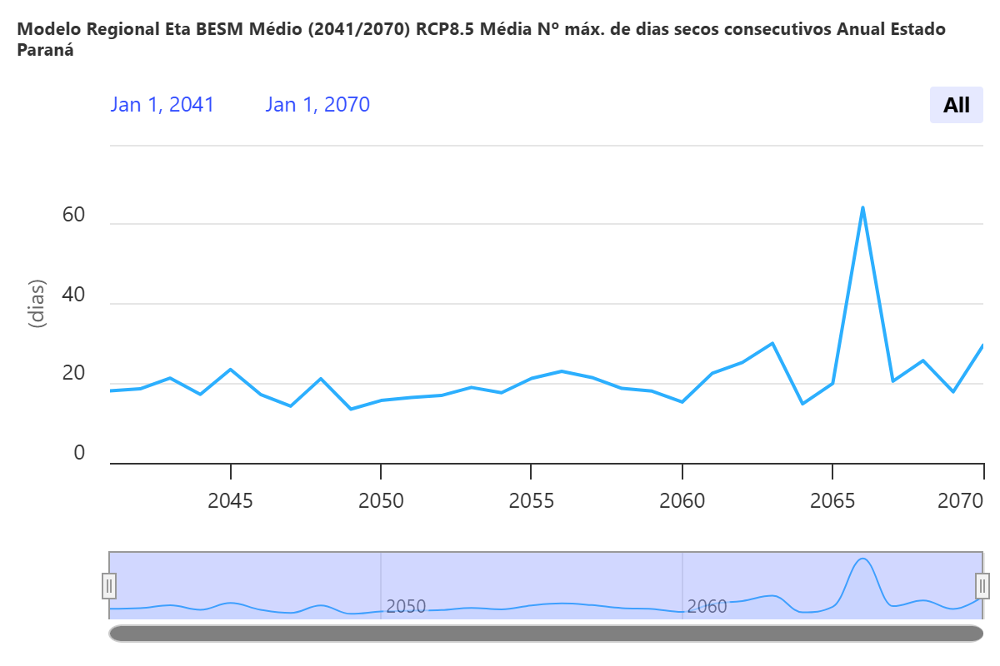
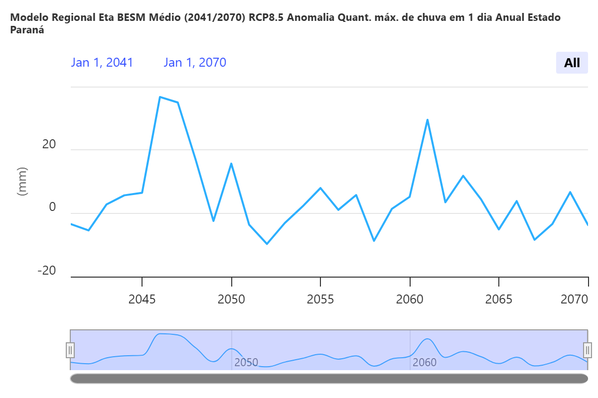
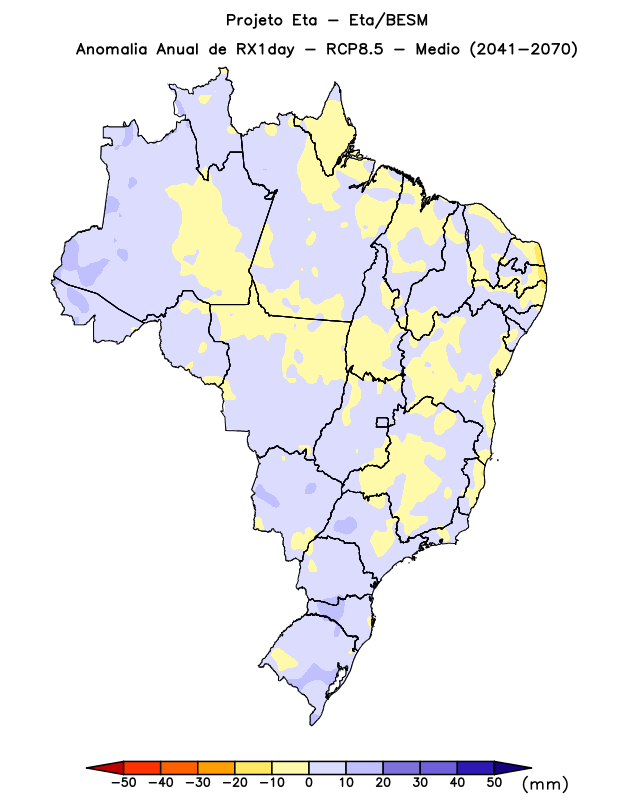

As projeções climatológicas apresentam diversas estimativas climáticas para as próximas décadas, podendo sintetizar (a depender do modelo) cenários mais ou menos críticos.
Nesta seção, analisamos cenários mais críticos relacionados à disposição das chuvas no Estado do Paraná e também num quadro mais amplo, em escala nacional.

Figura 1: Projeção do número máximo de dias secos consecutivos no Paraná (2041-2070). Fonte: inmet
Figura 2: Projeção da anomalia de valores máximos de chuva em um único dia no Estado do Paraná (2041-2070). Fonte: inmet
Figura 3: Projeção das anomalias referentes aos valores máximos de chuva em um único dia no Brasil (2041-2070). Fonte: inmetA partir desses dados, torna-se possível refletir sobre duas principais dinâmicas: A disposição de uma maior média de dias secos consecutivos e uma anomalia positiva referente à quantidade máxima de chuva em um único dia no Paraná.
Ou seja, no Paraná, compreende-se por esses dados um cenário no qual não apenas haveriam ainda mais períodos de maior suscetibilidade à intensas estiagens e secas (como a de 2019 - 2020), mas também um cenário de chuvas ainda mais concentradas, possívelmente aprofundando problemáticas ligadas à eventos de inundação (bastante comuns em Curitiba) .